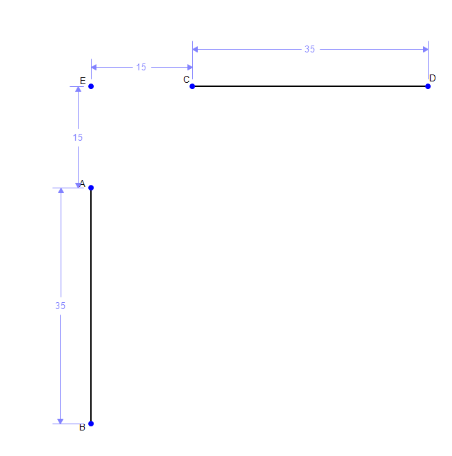

Container Challenge
Based on the instructions for this challenge, I knew that I had to apply the principles for mechanism synthesis we learned in class. I first copied all the relevant dimensions for the trash can and the start and end positions of the tray.
I knew that I had to apply a midpoint constraint to define the motion of the path of my tray. At first, I struggled to figure out the orientation of this midpoint constraint. My mistake was that I couldn't figure out how to place the midpoint so that the pivots of the links stayed inside the trashcan area. But I figured out that the pivots on the tray segment didnt have to be at the endpoints, which solved this issue. I placed one pivot on the center of the tray. As Prof. mentioned in class, the symmetry of the problem only allows one valid line on which the constrain tray can be defined (45 degree tilt).

After all the constrints were set, I figured out the locations for the pivots on the inside of the trashcan by constructing perpendicular bisectors between the points of motion of the tray. This allows me to find the center of curvature for the points of motion of the tray, which I use to place the pivot points for the links.

I then remove the perpendicular bisectors and fix all the lengths and pivots for the links. I also style the other tray constraints to be dashed lines to show that the tray will move along that path.

Here is the final video showcasing the motion of the tray.